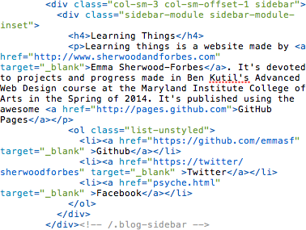

I am Learning Things
Progress
Projects
Favorite Things on the Internets
Light Sweater
Tracking the weather in all of San Francisco's nieghborhoods.
Stacks
Reimagining the Enoch Pratt Free Library Website
Learning Things

Portfolio
Twitter
Facebook
Github
LinkedIn
Dribbble